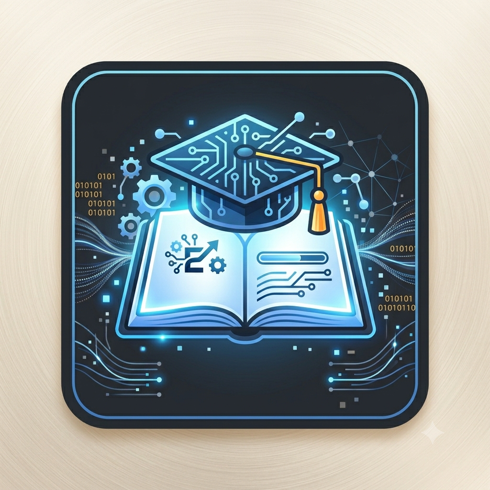

Meu Primeiro post
> Ícone quadrado com bordas arredondadas sobre fundo cinza escuro, representando tecnologia e educação. No centro, há um livro aberto que brilha com luz azul e, flutuando acima dele, um capelo de formatura estilizado com circuitos eletrônicos integrados. Ao redor, elementos digitais como engrenagens, linhas de dados conectadas e códigos binários brilham em tons de azul claro e detalhes dourados. A paleta de cores destaca tons de azul e cinza escuro.Por: Michelle Aparecida Jeronimo Do Couto
Boas-vindas ao meu novo blog! Aqui vou compartilhar dicas de progamação e curiosidades da área de tecnologia.